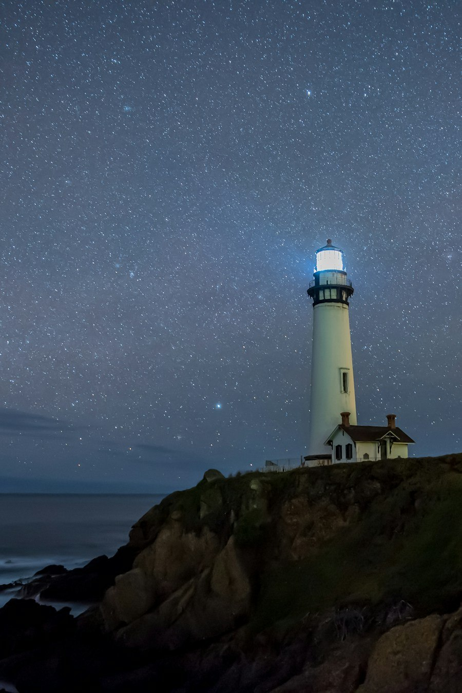

В ФОКУСЕ01 / 12
История о втором шансе
Кино. Настроение. Ваш вечер.
Для тех, кто устал выбирать. Найдите историю под своё настроение — от тихой драмы до большого приключения.

История о втором шансе
НАЧНИТЕ С ОЩУЩЕНИЯ
СТОИТ ПРИСМОТРЕТЬСЯ
Можно выбрать несколько. Остальное уточним.
Задайте годы, рейтинг и эмоциональный диапазон.
Сохраните находки в свой список «Посмотреть позже».